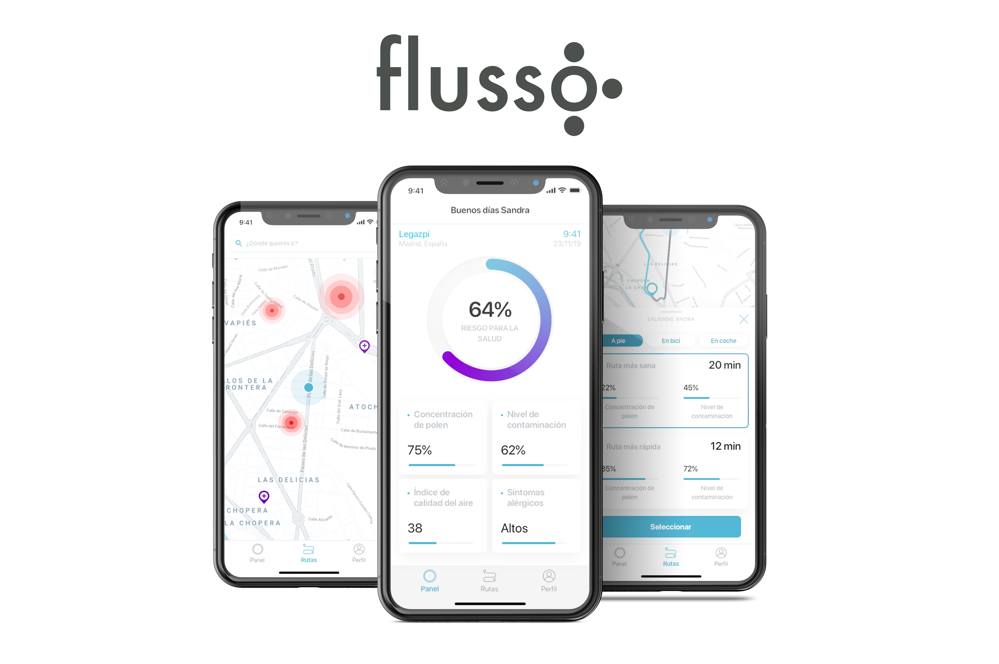
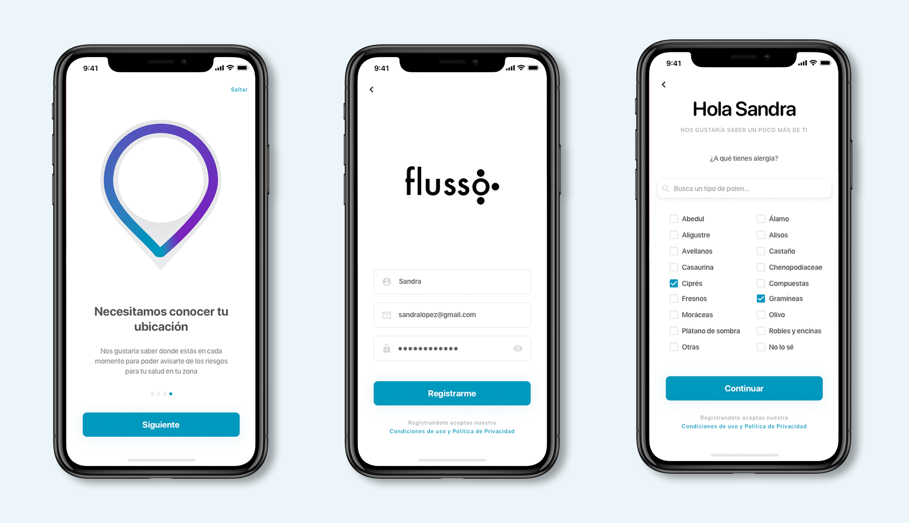
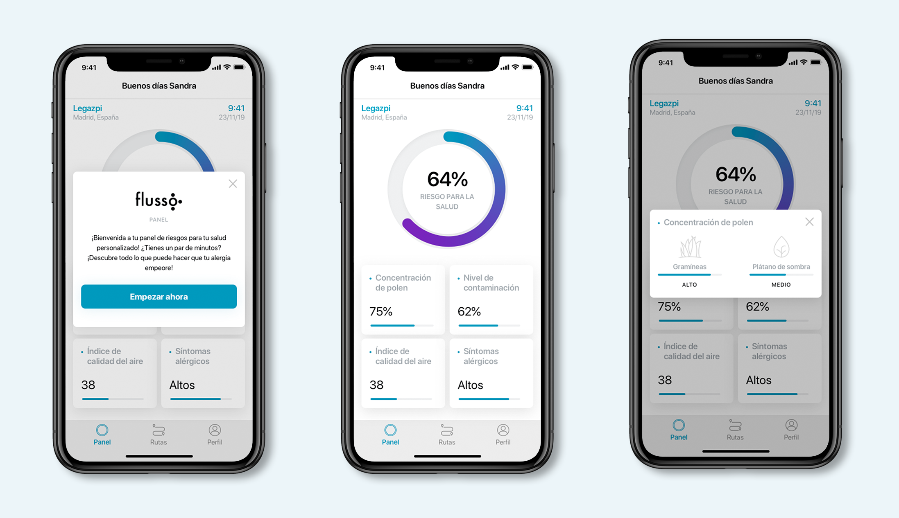
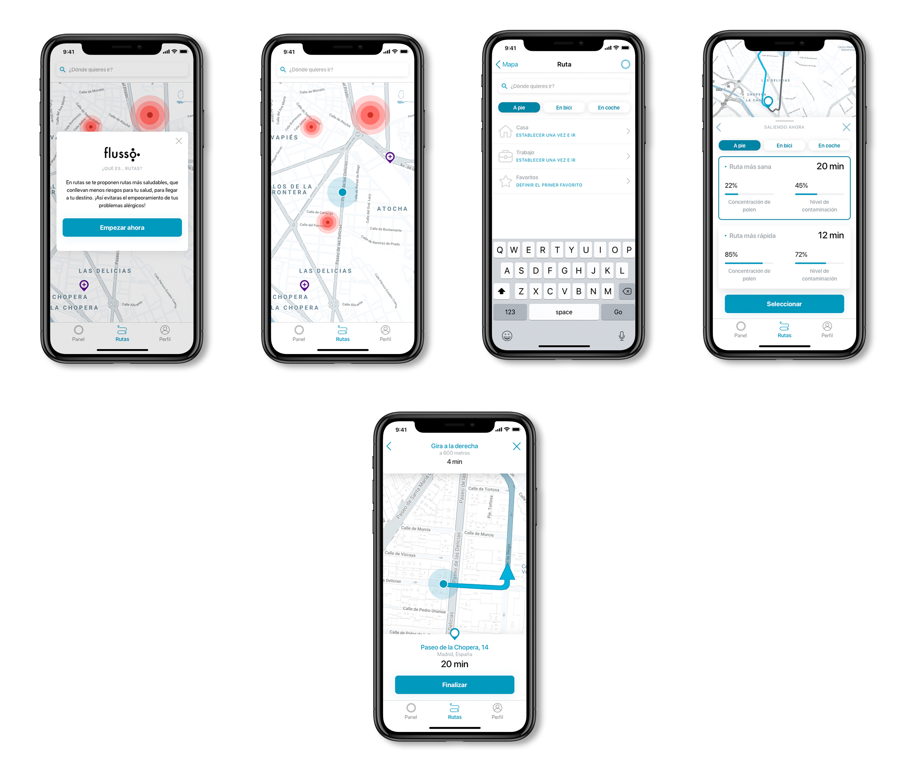
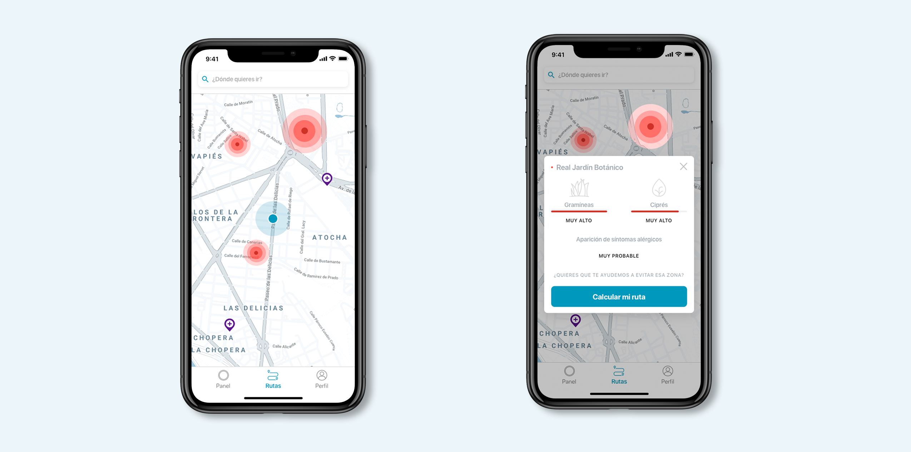
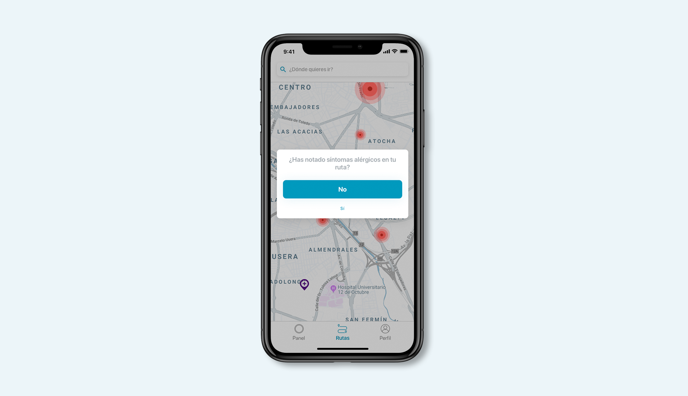

<!DOCTYPE html>
<html lang="en"></html>

<head>
    <meta charset="utf-8" />
    <title>Case Study - Flusso</title>
    <meta content="Case Study - Flusso" property="og:title" />
    <meta content="width=device-width, initial-scale=1" name="viewport" />
    <meta content="Webflow" name="generator" />
    <link href="./css/style.css"
        rel="stylesheet" type="text/css" />
    <script src="https://ajax.googleapis.com/ajax/libs/webfont/1.6.26/webfont.js" type="text/javascript"></script>
    <script
        type="text/javascript">WebFont.load({ google: { families: ["Montserrat:100,100italic,200,200italic,300,300italic,400,400italic,500,500italic,600,600italic,700,700italic,800,800italic,900,900italic"] } });</script>
    <!--[if lt IE 9]><script src="https://cdnjs.cloudflare.com/ajax/libs/html5shiv/3.7.3/html5shiv.min.js" type="text/javascript"></script><![endif]-->
    <script
        type="text/javascript">!function (o, c) { var n = c.documentElement, t = " w-mod-"; n.className += t + "js", ("ontouchstart" in o || o.DocumentTouch && c instanceof DocumentTouch) && (n.className += t + "touch") }(window, document);</script>
    <link href="./img/5e1896c118096113f58b1343_img-web32.png"
        rel="shortcut icon" type="image/x-icon" />
    <link href="./img/5e1896c52047f6412d1a6b2e_img-web.png"
        rel="apple-touch-icon" />


        <style>
            .w-webflow-badge{
                display: none !important;
            }
            .navigation-items{
            background-color: transparent !important;
        }
        </style>
</head>

<body>
    <div data-collapse="medium" data-animation="default" data-duration="400" id="navigation-home"
        class="navigation-oscuro w-nav">
        <div class="navigation-items">
            <div class="navigation-wrap">
                <nav role="navigation" class="navigation-items w-nav-menu"><a href="./index.html"
                        class="navigation-item w-nav-link">PORTFOLIO</a><a href="./about.html"
                        class="navigation-item w-nav-link">sOBRE MI</a></nav>
                <div class="menu-button w-nav-button"></div>
            </div>
        </div>
    </div>
    <div></div>
    <div class="section">
        <div class="container">
            <div class="w-layout-grid project-description-grid">
                <div id="w-node-67c4adb673b6-aa73e43c">
                    <div class="position-name-text">Evita la complicación de tus problemas alérgicos</div>
                    <div class="paragraph-light cc-position-name">Experiencia de usuario<br />Interfaz de
                        usuario<br />Branding</div>
                    <div class="paragraph-tiny cc-paragraph-tiny-light">2 semanas<br /></div>
                </div>
                <div id="w-node-67c4adb673c2-aa73e43c" class="div-block-4">
                    <div class="text-block">El reto</div>
                    <div class="paragraph-light">De acuerdo con un estudio realizado por la SEAIC (Sociedad Española de
                        Alergología e Inmunología Clínica), hay 8 millones de personas alérgicas en España. Además,
                        debido a la contaminación y al cambio climático van a ir aumentando paulatinamente el número de
                        personas con problemas alérgicos, van a empeorar los síntomas de los que ya son alérgicos y las
                        épocas en las que las personas se ven afectadas se van a ir alargando. Esta claro, que las
                        personas con algún tipo de alergia al polen no dejan de hacer vida normal, pero tienen un claro
                        problema, y es que no son conscientes del riesgo que les supone para su salud estar en zonas de
                        alta contaminación y con alta concentración de polen.</div>
                    <div class="text-block">La solución</div>
                    <div class="paragraph-light">Flusso es una app donde se informa al usuario de manera personalizada
                        en base a sus alergias del riesgo para su salud en su zona. Además sugiere al usuario rutas
                        alternativas mucho más sanas que evitarán el empeoramiento de sus problemas alérgicos.</div>
                </div>
            </div>
        </div>
    </div>
    <div class="div-block-5">
        <div class="text-block-2">Cuídate</div>
        <div class="paragraph-light cc-position-name">Proporciona información en el registro de tus alergias al polen y
            acepta que la app pueda obtener tu ubicación en tiempo real para que Flusso pueda ofrecerte información
            personalizada del riesgo para tu salud.</div>
    </div>
    <div class="section"></div>
    <div class="div-block-5">
        <div class="text-block-2">Conoce el riesgo para tu salud en tiempo real</div>
        <div class="paragraph-light cc-position-name">Infórmate del riesgo para tu salud que supone estar en tu
            ubicación. Conoce también datos más concretos del nivel de partículas alérgicas presentes, nivel de
            contaminación, índice de calidad del aire y la probabilidad de sentir síntomas alérgicos.</div>
    </div>
    <div class="section"></div>
    <div class="div-block-5">
        <div class="text-block-2">La mejor ruta para tu salud</div>
        <div class="paragraph-light cc-position-name">Recalcula tus trayectos, a pie, en coche o en bici para que sean
            más sanos, evitando así que tus problemas alérgicos se incrementen.<br />Existe la posibilidad de guardar
            tus sitios como tu casa o tu lugar de trabajo para que automáticamente Flusso te guíe a ese lugar por la
            mejor ruta.</div>
    </div>
    <div class="section"></div>
    <div class="div-block-5">
        <div class="text-block-2">¿De dónde obtiene la información?</div>
        <div class="paragraph-light cc-position-name">Flusso obtiene toda la información de los niveles e índices en
            tiempo real de una API que recoge los datos de las estaciones de aire presentes en todas las ciudades,
            además de los mapas de jardines e inventario de estos de la ciudad.<br />Todos estos datos, permiten obtener
            información útil para que así el usuario alérgico evite poner en riesgo su salud.</div>
    </div>
    <div class="section"></div>
    <div class="div-block-5">
        <div class="text-block-2">Next steps: crowdsourcing</div>
        <div class="paragraph-light cc-position-name">El objetivo de la app es poder llegar a crear una comunidad, donde
            los usuarios puedan informar de elementos que puedan poner en riesgo su salud o empeoren sus problemas
            alérgicos a través de la app, para que otros usuarios puedan conocer ese dato y evitarlo.</div>
    </div>
    <div class="section"></div>
    <div class="div-block-6">
        <h2 class="heading-4">El proceso</h2>
    </div>
    <div class="div-block-12"><a
            href="https://medium.com/@albalozano97/flusso-la-manera-de-evitar-el-empeoramiento-de-tus-problemas-al%C3%A9rgicos-41d23f6c3e57"
            target="_blank" class="button-2 w-button">Ver case study</a></div>
    <div class="container">
        <h3 class="heading-3">¿Tienes algo que contarme?</h3><a
            href="mailto:albalozanoguiu@gmail.com?subject=You&#x27;ve%20got%20mail!"
            class="email-link">albalozanoguiu@gmail.com</a>
    </div>
    <div class="footer-wrap">
        <div>
            <h1 class="heading-2">Alba Lozano Guiu</h1>
        </div>
        <div class="footer-links"><a href="https://www.linkedin.com/in/albalozanoguiu/" target="_blank"
                class="footer-item">Linkedin</a><a href="https://medium.com/@albalozano97" target="_blank"
                class="footer-item">medium</a></div>
    </div>
    <script src="https://d3e54v103j8qbb.cloudfront.net/js/jquery-3.4.1.min.220afd743d.js" type="text/javascript"
        integrity="sha256-CSXorXvZcTkaix6Yvo6HppcZGetbYMGWSFlBw8HfCJo=" crossorigin="anonymous"></script>
    <script src="https://uploads-ssl.webflow.com/5e089ec5ed2a2716cc73e430/js/webflow.cda4688cf.js"
        type="text/javascript"></script>
    <!--[if lte IE 9]><script src="//cdnjs.cloudflare.com/ajax/libs/placeholders/3.0.2/placeholders.min.js"></script><![endif]-->
</body>

</html>